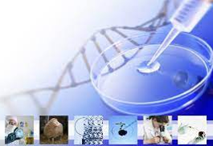
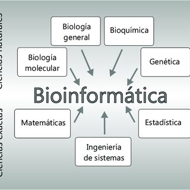

Los científicos que se dedican a la bioinformática deben analizar grandes cantidades de datos a nivel molecular y genómico. Como parte de su trabajo, deben desarrollar los programas informáticos necesarios para obtener esos datos y crear nuevos algoritmos para interpretarlos y adaptarlos a las necesidades del proyecto con el que trabajan. También crean visualizaciones gráficas de esos datos y sus resultados.
En junio de 2021, un equipo de bioinformáticos presentó los resultados que, a través de una inteligencia artificial, les habían permitido predecir las estructuras de casi todas las proteínas fabricadas por el cuerpo humano, más de 350.000. Este avance es uno de los más importantes de los últimos años y ha permitido dar un salto enorme en el conocimiento del organismo y el desarrollo de nuevos fármacos para tratar enfermedades.
